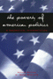
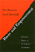
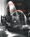

Browse
other Titles:
A B C
D E F
G H I
J K L
M N O
P Q R
S T U
V W X
Y Z |
 |
P
Is for Philadelphia
Korman,
Susan
64 pp • 10x8 • Spring 2005
cloth 978-1-59213-107-5
|
 |
Pacifica
Radio
The Rise of an Alternative Network
Lasar,
Matthew
320 pp • 6x9 • Spring 2000
paper 978-1-56639-777-3
|
 |
The
Package Deal
Marriage, Work, and Fatherhood in Men's Lives
Townsend,
Nicholas W.
264 pp • 6x9 • Spring 2002
paper 978-1-56639-958-6
cloth 978-1-56639-957-9
|
 |
Palestra
Pandemonium
A History of the Big 5
Lyons,
Robert S.
240 pp • 8.375x10.875 • Fall 2002
cloth 978-1-56639-991-3
|
 |
Paper
Son
One Man's Story
Chin,
Tung Pok with Winifred C. Chin, introduction by K. Scott Wong
184 pp • 5.5x8.25 • Fall 2000
paper 978-1-56639-801-5
cloth 978-1-56639-800-8
|
 |
Paradise
Remade
The Politics of Culture and History in Hawai'i
Buck,
Elizabeth
288 pp • 5.5x8.25 • Fall 1992
paper 978-1-56639-200-6
cloth 978-0-87722-978-0 |
 |
Paradise,
New York
A Novel
Pollack,
Eileen
288 pp • 5x9 • Fall 1998
paper 978-1-56639-789-6
cloth 978-1-56639-657-8
|
 |
The
Paradox of Natural Mothering
Bobel,
Chris
240 pp • 5.5x8.25 • Fall 2001
paper 978-1-56639-907-4
cloth 978-1-56639-906-7
|
 |
Parental
Leave and Child Care
Setting a Research and Policy Agenda
edited
by Hyde, Janet Shibley and Marilyn J. Essex
448 pp • Fall 1990
cloth 978-0-87722-732-8 |
 |
The Parker Sisters
A Border Kidnapping
Maddox, Lucy
256 pp • 6.125 x 9 • Spring 2016
cloth 978-1-4399-1318-5
|
 |
A
Part, Yet Apart
South Asians in Asian America
edited by Shankar, Lavina Dhingra and Rajini Srikanth
320 pp • 6x9 • Fall 1997
paper 978-1-56639-578-6
cloth 978-1-56639-577-9
|
 |
The
Passage of Nature
Emmet,
Dorothy
208 pp • Fall 1991
cloth 978-0-87722-896-7 |
 |
Passion
and Power
Sexuality in History
edited
by Peiss, Kathy and Christina Simmons with Robert A. Padgug
328 pp • 6x9 • 1989
paper 978-0-87722-637-6
cloth 978-0-87722-596-6 |
 |
Pastoral
Inventions
Rural Life in Nineteenth-Century American Art and Culture
Burns,
Sarah
392 pp • 9x7.5 • Spring 1989
cloth 978-0-87722-580-5 |
 |
Paths
into American Culture
Burnham,
John C.
Fall 1987
cloth 978-0-87722-505-8 |
|
Pathways
from Heroin Addiction
Recovery Without Treatment
Biernacki,
Patrick
268 pp • Spring 1986
cloth 978-0-87722-410-5 |
 |
Patriarchy
on the Line
Labor, Gender, and Ideology in the Mexican Maquila Industry
Tiano,
Susan
272 pp • 6x9 • Fall 1994
paper 978-1-56639-196-2
cloth 978-1-56639-195-5 |

|
Patriotic Professionalism in Urban China
Fostering Talent
Hoffman, Lisa M.
216 pp • 6x9 • Spring 2010
paper 978-1-4399-0035-2
cloth 978-1-4399-0034-5
|

|
A
Pause on the Path
Silvers,
Ronald
208 pp • Fall 1988
cloth 978-0-87722-559-1 |
 |
Paying
the Price
Ignacio Ellacuría and the Murdered Jesuits of El Salvador
Whitfield,
Teresa, foreword by Alvaro de Soto
528 pp • 6x9 • Fall 1994
paper 9781-56639-253-2
cloth 978-1-56639-252-5
|
 |
Peace
Politics
The United States Between Old and New World Orders
Joseph,
Paul
312 pp • 6x9 • Spring 1993
paper 978-1-56639-023-1
cloth 978-1-56639-022-4 |

|
Pedagogy of Democracy
Feminism and the Cold War in the U.S. Occupation of Japan
Koikari, Mire
New in Paperback!
240 pp • 6x9 • Spring 2010
paper 978-1-59213-701-5
cloth 978-1-59213-700-8
|
 |
Pedal
to the Metal
The Work Life of Truckers
Ouellet,
Lawrence J.
272 pp • 6x9 • Spring 1994
paper 978-1-56639-176-4
cloth 978-1-56639-175-7 |
 |
Pennsylvania Stories—Well Told
Ecenbarger,
William
248 pp • 5.5x8.25 • Spring 2017
cloth 978-1-4399-1465-6 |
 |
Pentecostal
Catholics
Power, Charisma, and Order in a Religious Movement
McGuire,
Meredith B.
1982
cloth 978-0-87722-235-4 |
|
Perceiving
Artworks
Fisher,
John
Fall 1980
cloth 978-0-87722-164-7 |
|
The Perfect Square
A History of Rittenhouse Square
Heinzen, Nancy M.
224 pp • 8x8 • Fall 2009
cloth 978-1-59213-988-0
|
 |
Performing
Asian America
Race and Ethnicity on the Contemporary Stage
Lee,
Josephine
256 pp • 6x9 • Spring 1997
paper 978-1-56639-637-0
cloth 978-1-56639-502-1
|
 |
The
Person and the Situation
Essential Contributions of Social Psychology
Ross,
Lee and Richard E. Nisbett
1992 pp • Spring 1991
cloth 978-0-87722-851-6 |
 |
Person
to Person
edited
by Graham, George and Hugh LaFollette
336 pp • Fall 1988
cloth 978-0-87722-576-8 |

|
Perry's Arcana
A Facsimile Edition with a Collation and Systematic Review
Petit, Richard E.
576 pp • 7x10 • Fall 2009
cloth 978-1-4399-0195-3
|

|
The Persuasive Power of Campaign Advertising
Ridout, Travis N. and Michael M. Franz
200 pp • 5.5x8.25 • Spring 2011
paper 978-1-4399-0333-9
cloth 978-1-4399-0332-2
|
|
Phantom Skies and Shifting Ground
Landscape, Culture, and Rephotography in Eadweard Muybridge's Lost Illustrations of Central America
Wolfe, Byron, and Scott Brady
228 pp • 12.25x10.75 • Spring 2017
cloth 978-1-942185-14-7 |

|
The Phenomenology of Dance
Sheets-Johnstone, Maxine
Foreword by Merce Cunningham
152 pp • 5.5x8.25 • Spring 2015
paper 978-1-4399-1262-1
cloth 978-1-4399-1261-4 |

|
Phil Jasner "On the Case"
His Best Writing on the Sixers, the Dream Team, and Beyond
edited by Jasner, Andy
264 pp • 6x9 • Fall 2017
cloth 978-1-4399-1494-6 |
 |
Philadelphia
A Brief History
Revised and Updated Edition
Simon,
Roger D.
156 pp • 6x9 • Spring 2017
paper 978-1-932304-26-8
|

|
Philadelphia
Finding the Hidden City
Elliott, Joseph E. B., Nathaniel Popkin, and Peter Woodall
200 pp • 7.875 x 10.5 • Fall 2017
cloth 978-1-4399-1300-0 |
 |
Philadelphia
Neighborhoods, Division, and Conflict in a Post-Industrial City
Adams,
Carolyn, David Bartelt, David Elesh, Ira Goldstein, Nancy Kleniewski
and William Yancey
224 pp • 6x9 • Fall 1991
paper 978-1-56639-078-1
cloth 978-0-87722-842-4
|
 |
The
Philadelphia Area Weather Book
Nese,
Jon and Glenn ’Hurricane’ Schwartz, foreword by Edward
G. Rendell
264 pp • 8.375x10 • Spring 2005
paper 978-1-59213-391-8
cloth 978-1-56639-956-2
|
 |
Philadelphia Freedoms
Black American Trauma, Memory, and Culture after King
Awkward, Michael
264 pp • 6x9 • Fall 2013
paper 978-1-4399-0709-2
cloth 978-1-4399-0708-5 |
 |
Philadelphia
Jewish Life, 1940-2000
edited
by Friedman, Murray, afterword by Dan Rottenberg
328 pp • 8.375x10.875 • Fall 2002
cloth 978-1-56639-999-9
|
 |
Philadelphia
Maestros
Ormandy, Muti, Sawallisch
Rodríguez-Peralta,
Phyllis White 192 pp • 6x8 •
Spring 2006
cloth 978-1-59213-487-8
|
 |
Philadelphia
magazine's Ultimate Restaurant Guide
edited
by White, April, foreword by Maria Gallagher
192 pp • 5.5x8.25 • Fall 2004
paper 978-1-59213-146-4
|
|
The Philadelphia Mummers
Building Community through Play
Masters, Patricia Anne
256 pp • 5.5x8.25 • Spring 2007
paper 978-1-59213-619-0
cloth 978-1-59213-609-4 |
 |
Philadelphia Mural Arts @ 30
edited by Golden, Jane and David Updike
208 pp • 10x8 • Spring 2014
cloth 978-1-4399-1131-0 |
 |
Philadelphia
Murals and the Stories They Tell
Golden,
Jane, Robin Rice and Monica Yant Kinney, photographs by David
Graham and Jack Ramsdale
160 pp • 9x11 • Fall 2002
cloth 978-1-56639-951-7
|
 |
The
Philadelphia Orchestra
A Century of Music
Philadelphia
Orchestra Assoc., edited by John Ardoin
256 pp • 9x12 • Fall 1999
cloth 978-1-56639-712-4 |
 |
Philadelphia
Preserved
Catalog of the Historic American Buildings Survey
Webster,
Richard J., introduction by Charles E. Peterson
Spring 1975
paper 978-0-87722-215-6
cloth 978-0-87722-089-3 |
 |
The Philadelphia Reader
edited
by Huber, Robert, and Benjamin Wallace, foreword by Buzz Bissinger
296
pp • 6x9 • Spring 2006
paper 978-1-59213-461-8
cloth 978-1-59213-460-1
|
 |
Philadelphia
Stories
A Photographic History, 1920-1960
Miller,
Fredric M., Morris J. Vogel and Allen F. Davis
319 pp • 8x10 • Fall 1988
cloth 978-0-87722-551-5 |
 |
Philadelphia's
Black Elite
Activism, Accommodation, and the Struggle for Autonomy, 1787-1848
Winch,
Julie
256 pp • 6x9 • Fall 1987
paper 978-1-56639-088-0
cloth 978-0-87722-515-7
|
 |
Philadelphia's
Cultural Landscape
The Sartain Family Legacy
edited
by Martinez, Katharine and Page Talbott
211 pp • 8.5x11 • Fall 2000
cloth 978-1-56639-791-9
|
 |
Philadelphia's
Old Ballparks
Westcott,
Rich
224 pp • 7x10 • Spring 1996
cloth 978-1-56639-454-3
|
 |
The
Philippine Temptation
Dialectics of Philippines-U.S. Literary Relations
San
Juan, Jr., E.
320 pp • 6x9 • Spring 1996
paper 978-1-56639-418-5
cloth 978-1-56639-417-8
|
|
Phillies
'93
An Incredible Season
Westcott,
Rich
224 pp • 7x10 • Fall 1994
paper 978-1-56639-231-0
|
 |
The
Phillies Encyclopedia
Westcott,
Rich and Frank Bilovsky, foreword by Harry Kalas
696 pp • 9x12 • Spring 2004
cloth 978-1-59213-015-3
|
 |
The
Phillies Reader
edited
by Orodenker, Richard
302 pp • 6x9 • Spring 2005
paper 978-1-59213-398-7
cloth 978-1-56639-503-8
|

|
The Philly Fan's Code
The 50 Toughest, Craziest, Most Legendary Philadelphia Athletes of the Last 50 Years
Tanier, Mike
264 pp • 5.5x8.25 • Fall 2011
paper 978-1-4399-0599-9
|
 |
Philosophy
Goes to School
Lipman,
Matthew
250 pp • Spring 1988
paper 978-0-87722-555-3
cloth 978-0-87722-537-9 |
 |
Philosophy
in the Classroom
Lipman,
Matthew, Ann Margaret Sharp and Frederick S. Oscanyan
240 pp • Spring 1985
paper 978-0-87722-183-8
|
 |
Philosophy
Looks at the Arts
Contemporary Readings in Aesthetics
edited
by Margolis, Joseph
500 pp • Spring 1987
paper 978-0-87722-440-2
cloth 978-0-87722-439-6
|
|
The
Philosophy of Alain Locke
Harlem Renaissance and Beyond
edited
by Harris, Leonard
344 pp • Fall 1988
paper 978-0-87722-829-5
cloth 978-0-87722-584-3 |
 |
The PHS City Parks Handbook
Pennsylvania Horticultural Society
112 pp • 8.5x8.5 • Spring 2011
paper 978-0-615-26081-5 |
 |
The
Physician's Hand
Nurses and Nursing in the Twentieth Century
Melosh,
Barbara
240 pp • Fall 1982
paper 978-0-87722-290-3
cloth 978-0-87722-278-1 |

|
Pictures from a Drawer
Prison and the Art of Portraiture
Jackson, Bruce
192 pp • 7x10 • Spring 2009
paper 978-1-59213-949-1
cloth 978-1-59213-948-4
|
 |
Picturing Model Citizens
Civility in Asian American Visual Culture
Phu, Thy
218 pp • 6.125x9.25 • Spring 2012
paper 978-1-4399-0721-4
cloth 978-1-4399-0720-7 |
 |
Pimping Fictions
African American Crime Literature and the Untold Story of Black Pulp Publishing
Gifford, Justin
216 pp • 6x9 • Spring 2013
paper 978-1-4399-0811-2
cloth 978-1-4399-0810-5
|
 |
Pinoy Capital
The Filipino Nation in Daly City
Vergara, Jr., Benito M.
232 pp • 6x9 • Fall 2008
paper 978-1-59213-665-0
cloth 978-1-59213-664-3
|
 |
A
Pleasing Birth
Midwives and Maternity Care in the Netherlands
De
Vries, Raymond
296 pp • 6x9 • Fall 2004
paper 978-1-59213-103-7
cloth 978-1-59213-102-0
|
 |
Pluralism,
Corporatism, and Confucianism
Political Association and Conflict Regulation in the United States,
Europe, and Taiwan
Zeigler,
Harmon
272 pp • Spring 1988
cloth 978-0-87722-529-4 |
 |
Poems
Performance Pieces Proses Plays Poetics
Schwitters,
Kurt, edited by Jerome Rothenberg, translated by Pierre Joris
288 pp • 7x10 • Spring 1993
paper 978-1-56639-264-8
cloth 978-0-87722-894-3 |
 |
Poisoned
Ivy
Lesbian and Gay Academics Confronting Homophobia
McNaron,
Toni A. H.
256 pp • 6x9 • Fall 1996
paper 978-1-56639-488-8
cloth 978-1-56639-487-1
|
|
Policing
as Though People Matter
Guyot,
Dorothy
448 pp • Fall 1990
paper 978-0-87722-766-3
cloth 978-0-87722-755-7
|
|
Policing
Pop
edited
by Cloonan, Martin and Reebee Garofalo
256 pp • 7x10 • Fall 2002
paper 978-1-56639-990-6
cloth 978-1-56639-989-0
|
 |
Policing
Women
The Sexual Politics of Law Enforcement and the LAPD
Appier,
Janis
256 pp • 6x9 • Fall 1997
paper 978-1-56639-560-1
cloth 978-1-56639-559-5
|
|
Policy
and Politics in Britain
The Limits of Consensus
Ashford,
Douglas E.
330 pp • 5x8 • Fall 1980
paper 978-0-87722-195-1
cloth 978-0-87722-194-4
|
 |
Policy
and Politics in Canada
Institutionalized Ambivalence
Tuohy,
Carolyn J.
352 pp • Fall 1991
paper 978-0-87722-871-4
cloth 978-0-87722-870-7 |
|
Policy
and Politics in France
Living with Uncertainty
Ashford,
Douglas E.
345 pp • 5x8 • Fall 1982
paper 978-0-87722-262-0
cloth 978-0-87722-261-3
|
 |
Policy
and Politics in Japan
Creative Conservativism
Pempel,
T. J.
352 pp • Spring 1980
paper 978-0-87722-250-7
cloth 978-0-87722-249-1 |
 |
Policy
and Politics in Sweden
Principled Pragmatism
Heclo,
Hugh and Henrik Madsen
352 pp • Spring 1986
paper 978-0-87722-266-8
cloth 978-0-87722-265-1 |
 |
Policy
and Politics in the United States
The Limits of Localism
Kelly,
E. W.
416 pp • Spring 1987
paper 978-0-87722-268-2
cloth 978-0-87722-267-5 |
 |
Policy
and Politics in West Germany
The Growth of a Semisoverign State
Katzenstein,
Peter J.
464 pp • Spring 1987
paper 978-0-87722-264-4
cloth 978-0-87722-263-7 |
 |
Policy-Planning
Organizations
Elite Agendas and America's Rightward Turn
Peschek,
Joseph G.
288 pp • Spring 1987
cloth 978-0-87722-468-6 |
|
Political
Parties and Elections in the United States
Marti,
Jose, edited by Philip S. Foner, translated by Elinor Randall
208 pp • Fall 1988
cloth 978-0-87722-604-8 |
 |
Political
Woman
Florence Luscomb and the Legacy of Radical Reform
Strom,
Sharon Hartman
352 pp • 7x10 • Fall 2000
paper 978-1-56639-819-0
cloth 978-1-56639-818-3
|
 |
Politics
and Popular Culture
Street,
John
224 pp • 6x9 • Spring 1998
paper 978-1-56639-603-5
cloth 978-1-56639-602-8
|
|
Politics
and the Class Divide
Working People and the Middle Class Left
Croteau,
David
320 pp • 6x9 • Fall 1994
paper 978-1-56639-255-6
cloth 978-1-56639-254-9
|
 |
The
Politics of Democratic Inclusion
edited
by Wolbrecht, Christina and Rodney E. Hero with Peri E. Arnold,
Alvin B. Tillery
352 pp • 6x9 • Spring 2005
paper 978-1-59213-359-8
cloth 978-1-59213-358-1
|
 |
The
Politics of Diversity
Immigration, Resistance, and Change in Monterey Park, California
Horton,
John
296 pp • 6x9 • Fall 1995
paper 978-1-56639-328-7
cloth 978-1-56639-327-0
|
|
The
Politics of Life
edited
by Houston, Velina Hasu
288 pp • 6x9 • Spring 1993
paper 978-1-56639-001-9
cloth 978-1-56639-000-2 |
|
The
Politics of Manhood
Profeminist Men Respond to the Mythopoetic Men's Movement
(And the Mythopoetic Leaders Answer)
edited
by Kimmel, Michael S.
400 pp • 6x9 • Fall 1995
paper 978-1-56639-366-9
cloth 978-1-56639-365-2 |

|
The Politics of New Immigrant Destinations
Transatlantic Perspectives
edited by Chambers, Stefanie, Diana Evans, Anthony M. Messina, and Abigail Fisher Williamson
348 pp • 6x9 • Spring 2017
paper 978-1-4399-1463-2
cloth 978-1-4399-1462-5
|

|
The Politics of State Feminism
Innovation in Comparative Research
McBride, Dorothy E. and Amy G. Mazur
318 pp • 6x9 • Fall 2010
paper 978-1-4399-0208-0
cloth 978-1-4399-0207-3
|
 |
The Politics of Staying Put
Condo Conversion and Tenant Right-to-Buy in Washington, DC
Gallaher, Carolyn
278 pp • 6x9 • Spring 2016
paper 978-1-4399-1265-2
cloth 978-1-4399-1264-5
|
 |
The
Politics of Street Crime
Criminal Process and Cultural Obsession
Scheingold,
Stuart A.
250 pp • Spring 1991
paper 978-1-56639-024-8
cloth 978-0-87722-825-7 |
 |
The
Politics of the Possible
The Brazilian Rural Workers' Trade Union Movement, 1964-1985
Maybury-Lewis,
Biorn
320 pp • 6x9 • Spring 1994
paper 978-1-56639-167-2
cloth 978-1-56639-166-5 |
 |
The
Politics of Women's Health
Exploring Agency and Autonomy
Sherwin,
Susan and the Feminist Healthcare Network
321 pp • 6x9 • Spring 1998
paper 978-1-56639-633-2
cloth 978-1-56639-632-5
|
 |
Polka
Happiness
Keil,
Charles, Angeliki V. Keil and Dick Blau
288 pp • 8x10 • Fall 1992
paper 978-1-56639-462-8
cloth 978-0-87722-819-6 |
 |
Pop
Music and the Press
edited
by Jones, Steve
288 pp • 6x9 • Fall 2002
paper 978-1-56639-966-1
cloth 978-1-56639-965-4
|
 |
Popular
Organization and Democracy in Rio De Janeiro
A Tale of Two Favelas
Gay,
Robert
208 pp • 5.5x8.25 • Fall 1993
paper 978-1-56639-120-7
cloth 978-1-56639-119-1
|
 |
Positively
No Filipinos Allowed
Building Communities and Discourse
edited
by Tiongson, Jr., Antonio T., Edgardo V. Gutierrez and Ricardo V.
Gutierrez, foreword by Lisa Lowe 272 pp •
6x9 • Fall 2005
paper 978-1-59213-122-8
cloth 978-1-59213-121-1
|
 |
The
Possessive Investment in Whiteness
How White People Profit from Identity Politics
Lipsitz,
George Revised and Expanded
Edition
312 pp • 6x9 • Spring 2006
paper 978-1-59213-494-6
cloth 978-1-59213-493-9
|
 |
Possibility,
Necessity, and Existence
Abbagnano and His Predecessors
Langiulli,
Nino
208 pp • 6x9 • Spring 1992
cloth 978-0-87722-921-6 |
 |
Post-Military
Society
Militarism, Demilitarization and War at the End of the Twentieth
Century
Shaw,
Martin
240 pp • 6x9 • Spring 1992
paper 978-0-87722-941-4
cloth 978-0-87722-940-7 |
|
Postmodernism
and Democratic Theory
Botwinick,
Aryeh
288 pp • 6x9 • Spring 1993
cloth 978-0-87722-997-1 |
|  |
The
Poverty of American Politics
A Theoretical Interpretation
Roelofs,
H. Mark
368 pp • 6x9 • Spring 1998
paper 978-1-56639-606-6 |
|  |
Power
and Empowerment
A Radical Theory of Participatory Democracy
Bachrach,
Peter and Aryeh Botwinick
216 pp • 5.5x8.25 • Spring 1992
paper 978-0-87722-939-1
cloth 978-0-87722-930-8 |
|
Power,
Process, and Popular Sovereignty
Mostov,
Julie
256 pp • 6x9 • Fall 1992
cloth 978-0-87722-970-4 |
 |
Presenting
the Past
Essays on History and the Public
edited
by Benson, Susan Porter, Stephen Brier and Roy Rosenzweig
400 pp • 6x9 • Spring 1986
paper 978-0-87722-413-6
cloth 978-0-87722-406-8
|
 |
Presenting
Women Philosophers
edited
by Tougas, Cecile T. and Sara Ebenreck
280 pp • 7x10 • Spring 2000
paper 978-1-56639-761-2
cloth 978-1-56639-760-5
|
|
President
and Congress
Executive Hegemony at the Crossroads of American Government
Spitzer,
Robert J.
320 pp • 5.5x8.25 • Fall 1992
cloth 978-1-56639-016-3
|
|
Press
Box Red
The Story of Lester Rodney, the Communist Who Helped Break the
Color Line in American Sports
Silber,
Irwin, foreword by Jules Tygiel
256 pp • 6x9 • Spring 2003
paper 978-1-56639-974-6
cloth 978-1-56639-973-9
|
 |
Prison
Masculinities
edited
by Sabo, Don, Terry A. Kupers and Willie London
296 pp • 7x10 • Fall 2000
paper 978-1-56639-816-9
cloth 978-1-56639-815-2
|

|
Prisons and Patriots
Japanese American Wartime Citizenship, Civil Disobedience, and Historical Memory
Lyon, Cherstin M.
256 pp • 6x9 • Fall 2011
paper 978-1-4399-0187-8
cloth 978-1-4399-0186-1
|
|
Problem-Oriented
Policing
Goldstein,
Herman
249 pp • Spring 1990
cloth 978-0-87722-719-9 |
|
Proceedings
of the Black State Conventions, 1840-1865
Volume II
edited
by Foner, Philip S. and George E. Walker
405 pp • Fall 1985
cloth 978-0-87722-145-6 |
|
Proceedings
of the Black State Conventions, 1865-1900
Volume I
edited
by Foner, Philip S. and George E. Walker
Spring 1980
cloth 978-0-87722-149-4 |
|
Process
of Occupational Sex-Typing
The Feminization of Clerical Labor in Great Britain, 1870-1936
Cohn,
Samuel
288 pp • Fall 1985
cloth 978-0-87722-402-0 |
 |
Producing
Jazz
The Experience of an Independent Record Company
Gray,
Herman
184 pp • Fall 1988
cloth 978-0-87722-574-4 |
 |
Producing
Power
Ethnicity, Gender, and Class in a Caribbean Workplace
Yelvington,
Kevin A.
304 pp • 6x9 • Spring 1995
paper 978-1-56639-286-0
cloth 978-1-56639-285-3
|

|
The Production of Living Knowledge
The Crisis of the University and the Transformation of Labor in Europe and North America
Roggero, Gigi, foreword by Enda Brophy
214 pp • 5.5x8.25 • Fall 2011
cloth 978-1-4399-0573-9
|
 |
The Production of Modernization
Daniel Lerner, Mass Media, and "The Passing of Traditional Society"
Shah, Hemant
228 pp • 6x9 • Spring 2011
cloth 978-1-4399-0624-8
|
 |
Professions
and the State
Expertise and Autonomy in the Soviet Union and Eastern Europe
edited
by Jones, Anthony
256 pp • Spring 1991
cloth 978-0-87722-801-1 |
 |
The
Promise of World Order
Essays in Normative International Relations
Falk,
Richard
336 pp • Fall 1987
cloth 978-0-87722-517-1 |
|
Promiseland
A Century of Life in a Negro Community
Bethel,
Elizabeth Rauh
329 pp • Spring 1981
paper 978-0-87722-275-0
cloth 978-0-87722-211-8 |
 |
Promising
Vitek,
William
288 pp • 5.5x8.25 • Fall 1993
cloth 978-1-56639-052-1 |
 |
Property
and the Politics of Entitlement
Brigham,
John
240 pp • Fall 1990
cloth 978-0-87722-715-1 |
 ; ; |
The
Protection Racket State
Elite Politics, Military Extortion, and Civil War in El Salvador
Stanley,
William
344 pp • 6x9 • Spring 1996
paper 978-1-56639-392-8
cloth 978-1-56639-391-1
|

|
The Protestant Ethic Revisited
Gorski, Philip S.
342 pp • 6x9 • Fall 2011
paper 978-1-4399-0190-8
cloth 978-1-4399-0189-2
|
|
Psychiatry and Behavioral Science
An Introduction and Study Guide for Medical Students
edited by Baron, MSEd, DO, David and Ellen Sholevar, MD
320 pp • 7x10 • Spring 2008
paper 978-1-59213-531-8
|
 |
The
Psychodynamics of Organizations
edited
by Hirschhorn, Larry and Carole K. Barnett
288 pp • 6x9 • Spring 1993
paper 978-1-56639-021-7
cloth 978-1-56639-020-0 |
 |
Psychology
of Attitude Change and Social Influence
Zimbardo,
Philip G. and Michael R. Leippe
400 pp • Spring 1991
cloth 978-0-87722-852-3 |
 |
Psychology
of Judgment and Decision Making
Plous,
Scott
Spring 1993
cloth 978-0-87722-913-1 |
|  |
Public
Art in Philadelphia
Bach,
Penny Balkin
288 pp • 8x10 • Fall 1992
cloth 978-0-87722-822-6 |
 |
Public
Dollars for Private Schools
The Case of Tuition Tax Credits
edited
by James, Thomas and Henry M. Levin
285 pp • Fall 1983
paper 978-0-87722-386-3
cloth 978-0-87722-316-0 |
 |
Public Financing in American Elections
edited by Panagopoulos, Costas
268 pp • 6x9 • Spring 2011
paper 978-1-4399-0693-4
cloth 978-1-4399-0692-7
|

|
The Public and Its Possibilities
Triumphs and Tragedies in the American City
Fairfield, John D.
368 pp • 6x9 • Spring 2010
paper 978-1-4399-0211-0
cloth 978-1-4399-0210-3
|
|
The
Puerto Rican Diaspora
Historical Perspectives
edited
by Whalen, Carmen Teresa and Víctor Vázquez-Hernández
320 pp • 6x9 • Spring 2005
paper 978-1-59213-413-7
cloth 978-1-59213-412-0
|
 |
The
Puerto Rican Movement
Voices from the Diaspora
edited
by Torres, Andrés and José E. Velázquez
432 pp • 6x9 • Spring 1998
paper 978-1-56639-618-9
cloth 978-1-56639-617-2
|
 |
Puerto
Rican Women and Work
Bridges in Transnational Labor
edited
by Ortiz, Altagracia
272 pp • 6x9 • Fall 1996
paper 978-1-56639-451-2
cloth 978-1-56639-450-5
|
 |
Pushing Back the Gates
Neighborhood Perspectives on University-Driven Revitalization in West Philadelphia
Etienne, Harley F.
192 pp • 5.5x8.25 • Spring 2012
paper 978-1-4399-0069-7
cloth 978-1-4399-0068-0 |

|
Pushing for Midwives
Homebirth Mothers and the Reproductive Rights Movement
Craven, Christa
224 pp • 6x9 • Fall 2010
paper 978-1-4399-0220-2
cloth 978-1-4399-0219-6
|
 |
Putting the Horse Before Descartes
My Life's Work on Behalf of Animals
Rollin, Bernard E.
304 pp • 6x9 • Fall 2010
cloth 978-1-59213-825-8
|
 |
Putting
on Appearances
Gender and Advertising
Barthel,
Diane
232 pp • Fall 1989
paper 978-0-87722-661-1
cloth 978-0-87722-528-7
|